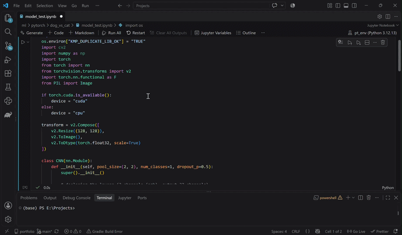
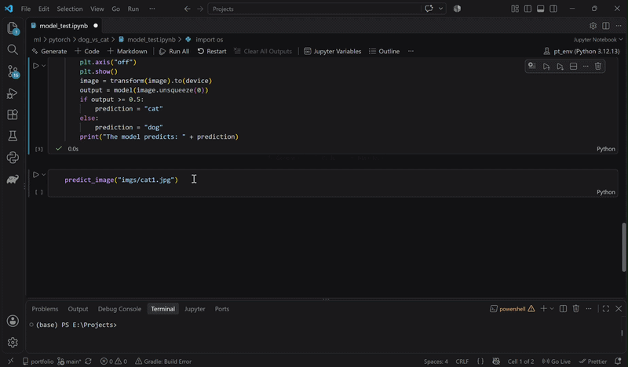
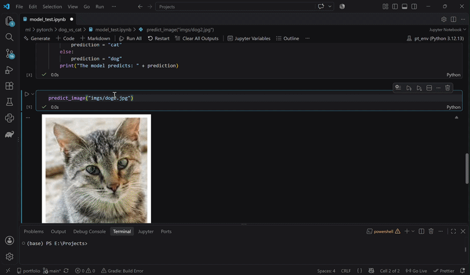

Back <<
• Industrial standard pipeline using Pytorch DataLoader with customized batch size and train/validation/test data visualization.
• Utilizes Pytorch nn.Module to create a custom convolutional neural network with configurable layers in the forward pass method; Pytorch BCEWithLogitsLoss() and Adam optimizer for model training.
• Trains model on train data, for each epoch, test the model using validation data and record its performance; if it predicts better than the last epoch, then save the model; stop the training process when patience runs out.
• Windows 10/11
• Python 3.x
• pip
Clone the repository and install all of the required packages with:
git clone https://github.com/demingQian/dog_vs_cat_image_classification.git
cd dog_vs_cat_image_classification
pip install requirements.txt -rEnsure you have a compatible Pytorch environment.

Open file model_test.ipynb in jupyter notebook or other IDE and run the first cell.
Create a new cell and enter the following code:
predict_image({your/path/to/image})For example, the image path can be "imgs/cat1.jpg".
Run the cell and check the output!


https://github.com/demingQian/dog_vs_cat_image_classification.git